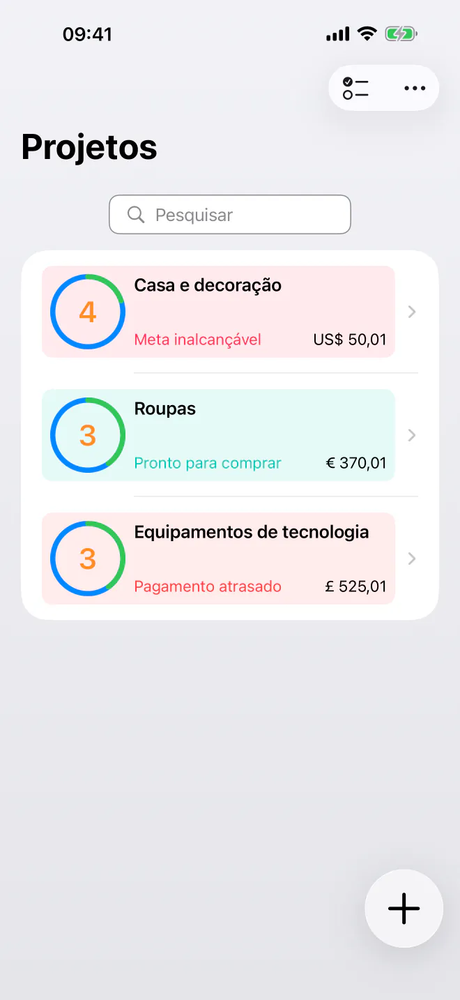
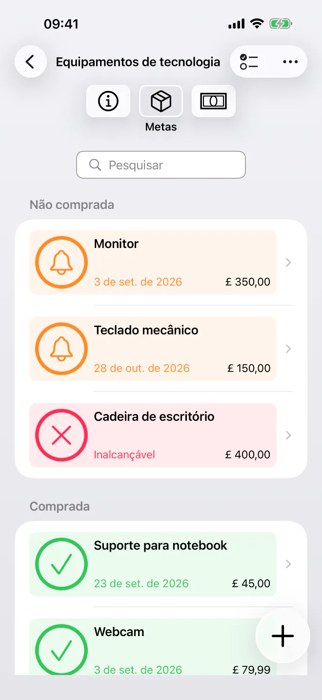
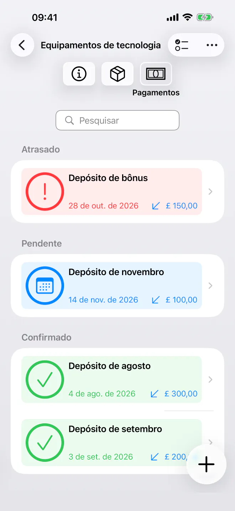
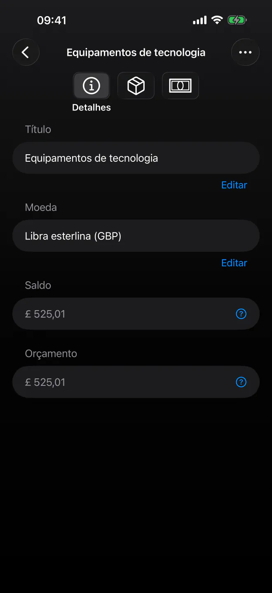

Saiba exatamente quando você pode comprar
Priorize suas metas de economia e saiba a data mais próxima em que você pode comprar cada item. Planejamento simples e privado, com datas automáticas. Sem conta.


Chega de adivinhar quando você finalmente poderá comprar o próximo item da sua lista. O BudgetBear é um app simples e privado que transforma suas metas em uma linha do tempo de compras clara. Adicione suas metas, defina suas prioridades e planeje seus depósitos, tudo em uma interface tranquila e sem poluição visual que respeita sua privacidade.
Pronto para começar a planejar suas compras? Baixe o BudgetBear hoje mesmo.
Por que escolher o BudgetBear
- 100% privado e sob o seu controle — Seus dados financeiros ficam apenas no seu dispositivo. Sem contas personalizadas, sem servidores de terceiros e sem cadastros na nuvem, nunca.
- Minimalista e focado — Uma interface rápida e fácil de usar, voltada ao que importa. Sem bagunça nem complexidade desnecessária.
- Saiba exatamente quando você pode comprar — O BudgetBear calcula a data mais próxima em que você pode comprar cada meta, para você nunca mais precisar adivinhar.
- Criado em torno das prioridades — Combine suas prioridades com seus pagamentos agendados para transformar seu plano de economia em uma data de compra realista para cada meta.
Transforme prioridades em uma data de compra
Assuma o controle total das suas metas de gastos e economia de longo prazo com um sistema baseado na clareza.
Listas de desejos por prioridade
Adicione itens desejados (metas) com preços estimados e arraste-os para a sua ordem exata de preferência.
Cálculo dinâmico da linha do tempo
Veja as datas de compra serem atualizadas na hora ao ajustar preços, adicionar depósitos ou reordenar metas.
Fluxo de caixa flexível
Adicione depósitos avulsos para completar orçamentos ou registre retiradas caso decida realocar o dinheiro em outro lugar.
Pagamentos agendados
Configure agendamentos recorrentes e finitos de depósitos ou retiradas (por exemplo, toda 2ª terça-feira ou no dia do pagamento do salário) para manter sua linha do tempo automatizada.

Recursos principais para suas metas de economia
- Projetos de economia prioritários — Agrupe metas relacionadas em projetos dedicados a viagens, eletrônicos, melhorias na casa ou reservas de emergência.
- Alocação inteligente — Os recursos são direcionados automaticamente para a meta de maior prioridade até ela ser totalmente financiada, e só então passam para a próxima.
- Simples e minimalista — Uma interface limpa e sem distrações, feita para inserir dados rapidamente, sem enfeites nem menus complicados.
- Agendamentos recorrentes finitos — Defina datas de início, datas de término e intervalos para contribuições recorrentes, sem regras complicadas.
Casos de uso versáteis para economizar
De reservas para gastos futuros a grandes compras, o BudgetBear se adapta às suas metas.
Reservas para gastos futuros
Separe dinheiro para despesas futuras já conhecidas, como seguros, compras de fim de ano ou manutenção do veículo.
Listas de desejos por prioridade
Organize os itens que você quer comprar em seguida e veja quanto um novo depósito aproxima a data da compra.
Grandes compras
Divida compras grandes em contribuições recorrentes viáveis e veja sua linha do tempo encurtar com o tempo.

Privacidade desde a concepção
Sem assinaturas. Sem rastreadores. Sem contas personalizadas.
O BudgetBear guarda tudo localmente: nada é enviado, sincronizado ou compartilhado com ninguém. Suas metas e os detalhes do seu orçamento nunca saem do seu dispositivo.
Comece de graça com até 3 projetos. Com uma compra única, o Pro desbloqueia projetos ilimitados, sem assinaturas, nunca.
Claro e eficaz
Seja para juntar dinheiro para as férias ou para um novo gadget, seja para montar uma reserva de emergência, o BudgetBear é o seu parceiro confiável para transformar metas de economia em datas de compra concretas. Simples, privado e sem necessidade de assinatura.
As melhores ferramentas de produtividade saem do seu caminho e deixam você se concentrar. É isso que o BudgetBear faz: sem recursos desnecessários, sem interfaces sobrecarregadas, apenas uma linha do tempo clara para as suas metas.